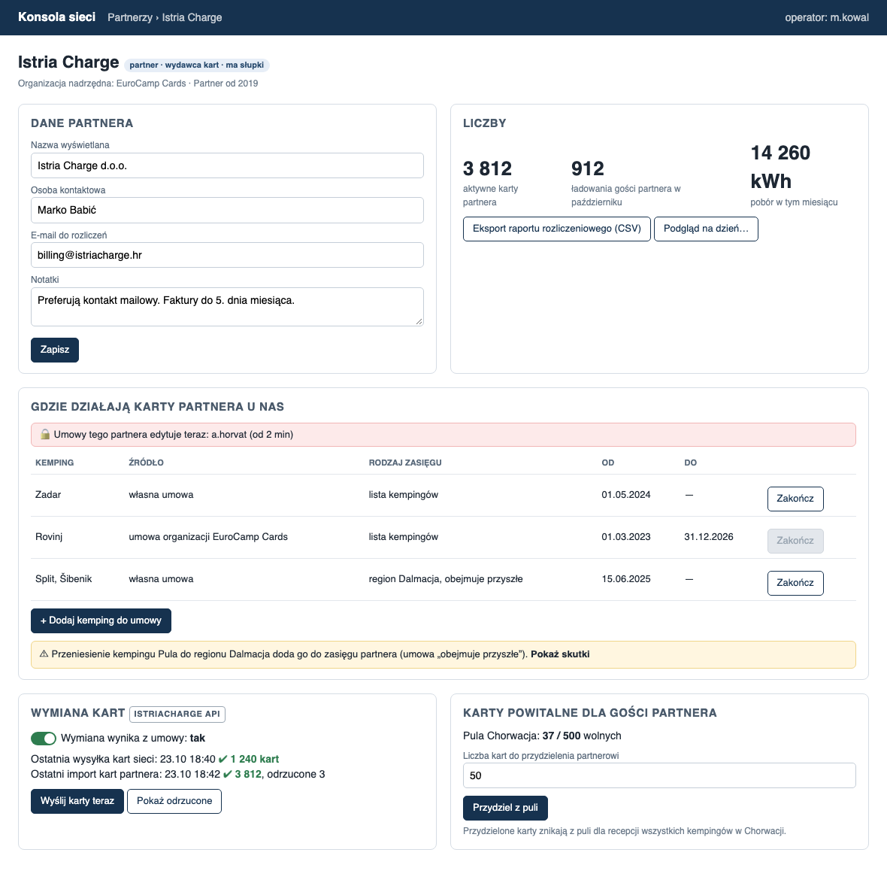

Anatomia skilla
Bierze wymaganie albo ekran i mówi, do której z czterech klas modelowania należy każda jego część. Klasa podpowiada klocki rozwiązania; zła klasa to przeinżynierowanie (warstwy bez wartości) albo niedoinżynierowanie (brak ochrony przy równoczesnym dostępie). Skill klasyfikuje i podpowiada, decyzja zostaje przy zespole.
Cztery klasy
- CRUD (notatnik): zapisz, odczytaj, zmień, usuń. Walidacji może być dużo, ale sprawdza tylko to, co przyszło w żądaniu. Klocek: kontroler i baza.
- Transformacja i prezentacja (T&P): tylko czyta i przekształca, nic nie zmienia. Widok, raport, licznik, kalendarz. Da się go skasować i odbudować. Klocek: funkcje, fasada, read model.
- Integracja: kilka modułów albo systemów, kontrakty, kolejność, częściowe porażki. Klocek: proces (saga) albo adapter.
- Rywalizacja o zasób (RC): odpowiedź na „czy mogę zrobić X?” zależy od danych, które ktoś inny zmienia w tej samej chwili. Sprawdzenie i zapis muszą być atomowe. Klocek: agregat.
Ekran zamiast opisu
Na makiecie skill czyta każdy element osobno, bo jeden ekran prawie zawsze łączy kilka klas:
- formularz z „Zapisz”, zawsze aktywnym → CRUD;
- tabela, liczby, eksport, podgląd → T&P;
- licznik „37 / 500”, kolor wolne/zajęte, przyciski „Zarezerwuj”, „Przydziel” → RC;
- przycisk wyszarzony zależnie od stanu, kłódka „ktoś edytuje” → kandydat na RC, do sprawdzenia;
- „Wyślij do…”, logo zewnętrznego systemu, status synchronizacji → Integracja.
Pytanie przy każdym „Zapisz”: co się zmienia dla innych użytkowników w chwili kliknięcia? Nic → CRUD; blokuje albo zmienia im dostępność → RC.
Heurystyki
- Test zmienności. Czy dane, które sprawdzam, zanim pozwolę na operację, może ktoś zmienić w tej samej chwili? Tak → RC i agregat. Nie, wszystko przyszło w żądaniu → CRUD z walidacją.
- „Tylko jeden…” jeszcze niczego nie dowodzi. „Tylko jeden właściciel” zmieniany przez jednego administratora po kolei to ograniczenie w bazie, nie agregat.
- Grupowanie to prezentacja. Etykieta, kategoria, folder, które nie zmieniają, co wolno z obiektem → napis na obiekcie, nie osobna encja.
- Polityka liczona osobno od limitu. „Ile wolno” liczy funkcja (T&P), „czy już przekroczono” pilnuje agregat (RC).
- Pytania na przykładzie z ekranu. Skill pyta o konkretny element makiety i daje odpowiedzi do wyboru, każdą z tym, co z niej wynika.
Wynik
Klasa z pewnością, ścieżka dedukcji (pytanie → odpowiedź → co z tego wynika), czego nie robić, sugerowane podejście, otwarte pytania. Przy kilku klasach: dekompozycja (komponent | klasa | uzasadnienie) i diagram powiązań. Przy RC wskazuje następny krok: zaprojektować jednostkę spójności.
Ograniczenia
- Widzi tylko to, co jest na ekranie i w odpowiedziach. Reguły, których makieta nie pokazuje, nie trafią do podziału.
- Klasa części zależy od odpowiedzi człowieka: ta sama kłódka „edytuje teraz” to raz RC, raz tylko UX.
Przebieg: nowy ekran „Karta partnera”
Makieta nowego ficzera w konsoli sieci. Prompt: /problem-classifier, makieta i jedno zdanie o tym, kim jest partner. Jedna runda, 4 pytania.

Klasyfikacja: złożony ekran (CRUD + T&P + Integracja + Resource Contention)
Pewność: wysoka. Każdy panel makiety ma swoje mocne sygnały, a Twoje odpowiedzi rozstrzygnęły wszystkie miejsca, gdzie mogło być inaczej.
Na tym ekranie są cztery klasy problemów. Tylko jeden element to prawdziwa rywalizacja o zasób: pula kart powitalnych. Panel „Gdzie działają karty” wygląda najgroźniej (kłódka, „edytuje teraz”, wyszarzone przyciski), a mimo to agregatu nie potrzebuje.
Ścieżka dedukcji
| # | Pytanie | Odpowiedź | Co z tego wynika |
|---|---|---|---|
| 1 | Czy „Zapisz” w Danych partnera zmienia coś, co widzą lub mogą zrobić inni? | wynika z makiety: nazwa, kontakt, e-mail, notatki | Pola tylko opisowe, więc CRUD |
| 2 | Czy liczby (karty, ładowania, kWh), eksport CSV i „Podgląd na dzień…” cokolwiek zapisują? | wynika z makiety: tylko odczyt | Wszystko da się odtworzyć z ładowań i kart, więc T&P |
| 3 | Pula Chorwacja 37/500: czy recepcje i operator biorą z niej równocześnie, i co przy przydziale 50 przy 37 wolnych? | Wspólna pula, odmowa | Sprawdzenie „czy starczy” i zdjęcie kart z puli muszą być atomowe, więc RC |
| 4 | Co by się zepsuło, gdyby dwóch operatorów naraz edytowało umowy partnera? | Nic, to tylko UX | Kłódka nie chroni żadnej reguły. Umowy to CRUD z walidacją |
| 5 | Pula trafia do Dalmacji. Jak ma się zmienić zasięg? | Automatycznie, od razu | Zasięg jest wyliczany z reguł, nie zapisywany. Baner i „Pokaż skutki” to T&P. Przeniesienie kempingu niczego nie blokuje, więc nie ma RC między modułami |
| 6 | Co z ładowaniem, gdy wymiana z API się nie uda albo karta zostanie odrzucona? | Retry, nic nie blokuje | Integracja bez sagi. Obowiązuje ostatnia znana lista, odrzucone karty są tylko do wglądu |
Dlaczego tak
- „Pula Chorwacja: 37 / 500 wolnych” i „Przydzielone karty znikają z puli dla recepcji wszystkich kempingów” to licznik współdzielony przez wielu aktorów naraz. To klasyczne RC.
- „Wymiana kart · ISTRIACHARGE API”, „Ostatnia wysyłka… / Ostatni import…, odrzucone 3” to system zewnętrzny ze statusem synchronizacji, czyli Integracja.
- „Umowy tego partnera edytuje teraz: a.horvat” wygląda na RC, ale żadna reguła za tym nie stoi (odpowiedź 4). To pułapka.
- Wyszarzone „Zakończ” przy Rovinju (źródło: umowa organizacji EuroCamp Cards): przycisk nie jest zablokowany przez stan, tylko przez własność. Ten wiersz należy do umowy organizacji nadrzędnej, więc edytuje się go tam. Wystarczy
canEdit()liczone ze źródła, nie maszyna stanów. - „region Dalmacja, obejmuje przyszłe” to reguła zasięgu, a nie lista kempingów. Efektywny zasięg jest wyliczany, więc to T&P.
Czego NIE robić
- Nie budować agregatu „Umowa partnera” / „Zasięg” tylko dlatego, że UI ma kłódkę. Nie ma niezmiennika, więc agregat nie miałby czego pilnować. Jeśli chcecie uniknąć nadpisywania się nawzajem, wystarczy wersja wiersza (optimistic) w CRUD-zie. Pesymistyczna blokada „edytuje teraz” jest opcjonalna.
- Nie zapisywać efektywnego zasięgu jako listy kempingów. Przy „obejmuje przyszłe” taka kopia zestarzeje się przy pierwszym przeniesieniu kempingu.
- Nie wciągać puli kart do agregatu partnera. Pula należy do kraju (Chorwacja) i korzystają z niej recepcje wszystkich kempingów. Partner jest tylko jednym z biorców.
- Nie robić sagi dla wymiany kart. Nic nie musi się udać razem z czymś innym.
Sugerowane podejście
- Pula kart powitalnych: agregat
PulaKartPowitalnych(kraj), z metodąprzydziel(partnerId, n)dla operatora iwydaj(kempingId)dla recepcji. Niezmiennik:wolne ≥ 0. Przy braku kart odmowa, np.PrzydziałOdrzucony { żądane: 50, wolne: 37 }. Do tego optimistic locking. W UI warto od razu ostrzec, gdy pole przekracza stan, ale rozstrzyga agregat. - Dane partnera i umowy: zwykłe kontrolery na bazie. Walidacja dat od/do i ewentualnie wersja wiersza. „Zakończ” jest aktywne tylko dla umów, których źródłem jest ten partner.
- Zasięg, liczby, podgląd na dzień, „Pokaż skutki”: czyste funkcje.
zasięg(partner, dzień) = własne umowy ∪ umowy organizacji ∪ reguły regionów(przynależność kempingów na dzień). „Pokaż skutki” to ta sama funkcja wywołana na hipotetycznej przynależności. Liczby budujecie fasadą lub read modelem z ładowań. Wymiana kart (punkt 4) korzysta z tej samej funkcji przy decyzji, czy karta działa na danym kempingu. - Wymiana kart: adapter (ACL) do API IstriaCharge, z idempotentną wysyłką całego snapshotu. Wtedy „Wyślij teraz” i job z harmonogramu nie wchodzą sobie w drogę. Import zapisuje ostatnią znaną listę kart partnera, a odrzucone karty trafiają do raportu.
Otwarte pytania przed modelowaniem
- Pula: czy przydział partnerowi to przesunięcie kart do jego podpuli (recepcja wydaje potem z niej), czy tylko zmniejszenie licznika? To decyduje, czy jest jeden agregat, czy dwa.
- „Podgląd na dzień…”: czy ma pokazywać stan wstecz, czyli zasięg i przynależność do regionu na wybrany dzień? Jeśli tak, przynależność kempingów do regionów musi mieć historię z datami.
- „Wymiana wynika z umowy: tak”: przełącznik jest tylko do odczytu, a jego wartość wynika z umowy. Która umowa o nim decyduje, skoro partner ma kilka?
- Równoległe „Wyślij teraz” i job: czy wysyłka to zawsze pełny snapshot (wtedy jest idempotentna), czy przyrost (wtedy trzeba deduplikacji)?
---
Proponowany podział
| Komponent | Klasa | Uzasadnienie |
|---|---|---|
| Dane partnera | CRUD | Pola opisowe, nic od nich nie zależy |
| Umowy partnera (dodaj / zakończ kemping) | CRUD + canEdit() liczone ze źródła | Brak niezmiennika (odp. 4), blokada to tylko UX |
| Efektywny zasięg + „Pokaż skutki” + baner | T&P (funkcja reguł) | Wyliczany z umów i regionów, liczony od razu (odp. 5) |
| Liczby, eksport CSV, podgląd na dzień | T&P | Projekcja ładowań i kart |
| Wymiana kart z IstriaCharge | Integracja (ACL + retry) | System zewnętrzny, porażka niczego nie blokuje (odp. 6) |
| Pula kart powitalnych | Resource Contention | Wspólny licznik, równoczesne pobrania, odmowa (odp. 3) |
Komponenty ekranu
Każdy z czterech komponentów ekranu dostaje osobny, prostszy model; agregat jest tylko tam, gdzie jest rywalizacja o zasób.